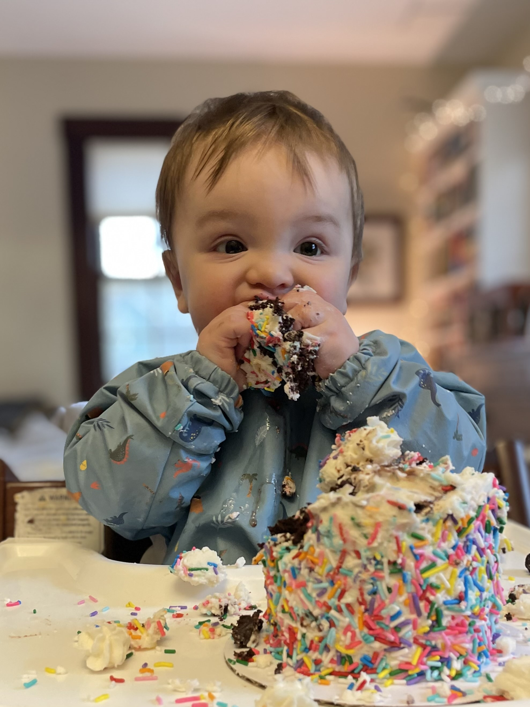
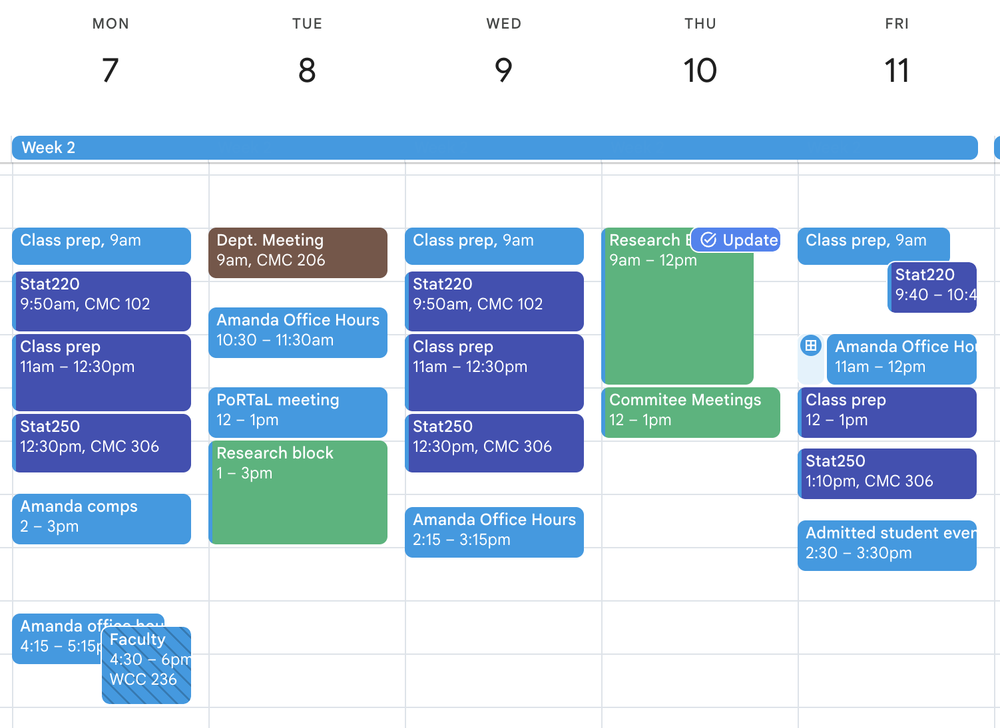

05:00
Welcome to Stat250!
Day 01
Prof Amanda Luby
Carleton College
Stat 250 - Spring 2025
Plan for today
- Intros
- Context for the class
- Syllabus
- Setting course expectations
Intros
About me
- First year at Carleton!
- Taught at Swarthmore for 5 years before moving here this fall
- PhD in Statistics & Data Science from Carnegie Mellon University
- Grew up in Minnesota, went to St Ben’s as an undergrad

Three prongs of statistics
- Design
The design of surveys/experiments and collection of data to more efficiently/correctly address scientific questions
- Exploration
Understand the major features of and detect patterns in data
- Inference
Account for randomness, variability, and bias in a sample in order to draw reasonable and correct conclusions about a population
Statistics vs. probability
Probability (Math 240)
We learned how to calculate the probability of seeing a result (data) given a specific probability model (e.g., a specific distribution)
Statistics (Stat 250)
We will learn how to make statements about the underlying probability models given the data we see
Example: Spies vs. Statisticians
During WWII, the Allies wanted to determine production rates of tanks (and airplanes, missiles, etc.)
Spies
Gathered intelligence (intercepted messages, interrogated of prisoners, etc.) and made the following estimates:
- June 1940: 1000
- June 1941: 1550
- August 1942: 1550
Example: Spies vs. Statisticians
Statisticians
The Allies had a sample of serial numbers (via capture, photography, etc.), \(X_1, X_2, \ldots, X_n\), and there were \(N\) produced.
Allied statisticians needed to devise an estimator to obtain \(N\)
Ultimately, they used \(\widehat{N} = X_{\text{max}} + \dfrac{X_{\text{max}}}{n} - 1\)
- June 1940: 169
- June 1941: 244
- August 1942: 327
Example: Spies vs. Statisticians
After the war, the Allies discovered documents revealing the true number of tanks produced:
| Month | Truth | Statisticians | Spies |
|---|---|---|---|
| June 1940 | 122 | 169 | 1000 |
| June 1941 | 271 | 244 | 1550 |
| August 1942 | 342 | 327 | 1550 |
Context for the class
Prereqs
- Math240 (Probability)
- Stat120 or other applied intro stats course is helpful but not required
- I’ll assume some experience with R
- We’re going to use mechanics from calculus & probability, but it’s not the focus of the course
- Part of HW1 is Calc/Prob review. refresh your memory, use resources that you need, talk to me sooner rather than later if it’s especially tough
Statistics seems to be a difficult subject for mathematicians, perhaps because its elusive and wide-ranging character mitigates against the traditional theorem-proof method of presentation. It may come as some comfort then that statistics is also a difficult subject for statisticians
Controversies in the Foundations of Statistics, Bradley Efron 1978
Statistical models
A statistical model consists of
a collection of random variables to describe observable data,
the possible joint distribution(s) of the random variables,
and the parameters, \(\boldsymbol \theta\), that define those distributions
R.A. Fisher
1890-1962
- Variance
- ANOVA
- Null hypothesis
- Maximum likelihood estimation
- p-value
- Lots of contributions in genetics
- Also a eugenecist
Neyman & Pearson
- Confidence interval
- Correlation
- Regression
- Standard deviation
- Effect size
- “Optimal” tests
- \(\alpha\) and \(\beta\)
- Type I and II error
Frequentist vs Bayesian

Frequentist vs Bayesian
Frequentist
- “Classical” statistics
- Probability is a long-run frequency
- Type I and Type II errors
- Confidence intervals
Bayesian
- Probability is a subjective belief
- Update “prior” probabilities with data to obtain “posterior” probabilities
- “Credible” intervals
- Computationally intensive
Parametric vs Nonparametric
Nonparametric
The basic idea of nonparametric inference is to use data to infer an unknown quantity while making as few assumptions as possible. Usually, this means using statistical models that are infinite-dimensional. (Wasserman, 2006)
Parametric
A parametric inference uses models that consist of a set of distributions/densities that can be parameterized by a finite number of parameters.
Tentative schedule
| Topic | Chapters | Approx. Duration |
|---|---|---|
| Review | 1-4 | 1 week |
| Parametric estimation | 6 | 3 weeks |
| Parametric & Nonparametric inference | 3-5, 7-9 | 4 weeks |
| Modeling | 8-10 | 2 weeks |
Discuss front page of handout
Syllabus
Course description
This course is an introduction to the mathematical theory of frequentist and Bayesian statistical inference. Topics include parameter estimation, confidence intervals and hypothesis testing, linear models, and Bayesian inference.
Students who analyze data, or who aspire to develop new methods for analyzing data, should be well-grounded in mathematical statistics.
Course Objectives
By the end of this course, you should be able to:
- Derive estimators for parameters using maximum likelihood, the method of moments, and Bayesian techniques
- Evaluate the performance of estimators and describe their strengths and weaknesses
- Demonstrate a sophisticated understanding of the mathematics behind hypothesis tests, confidence intervals, and linear models
- Use the statistical package R to implement basic simulations of estimation scenarios
Textbook:
Mathematical Statistics with Resampling and R (3rd edition) by Chihara and Hesterberg
Sometimes, it can help to see a second way of topics being explained. I recommend Mathematical Statistics with applications by Larsen & Marx.
Computing:
We’ll be using R and RStudio throughout the course. If you’ve downloaded R to your own computer from a different class, great! If not, you can access anything you need through the maize server:
What will you do in this course?
Each of the following components are important for your learning and therefore part of your final grade calculation:
- Daily Prep (5%)
- Homework (15%)
- Due once per week, typically Wednesdays but sometimes Fridays
- Group work and attendance (5%)
- more than 5 absences \(\to\) 0
- Midterm exams (2 x 17.5%)
- Course Project (10%)
- Final Exam (30%)
What will a typical day/week look like?
Before class:
- Read a chapter
- Come with questions
- Be prepared to try what was covered
In class:
- Mini lecture
- Sometimes review
- Sometimes new
- Hands-on work or coding in R
After class:
- Finish in-class exercises
- Work on homework
Office hours (tentative)
| Day | Time | Type | Location |
|---|---|---|---|
| Monday | 4:15-5:15 | Drop-in | CMC 307 |
| Tuesday | 10:30-11:30 | Drop-in | CMC 307 |
| Wednesday | 2:15-3:15 | Drop-in | CMC 307 |
| Friday | 11-12 | Drop-in | CMC 307 |
Where is Amanda this term?
Communication
- Moodle: assignments, note sets, and grades
- Slack: homework questions, announcements, discussion
- Email: personal matters, time-sensitive annoucements
Slack is the fastest way to reach me. I typically will respond to messages 3x per weekday. I try to respond to emails within 48 hours. I’m online sporadically on evenings and weekends to devote time to family and rest – I hope you also use this time to reset and recharge!
Advice from past students:
- Start the problem sets early and go to office hours!
- Work with other people in the class, collaboration is key
- Be willing to ask lots of questions and don’t be afraid to ask for help!
- I would advise for them to attend office hours and the stat clinic since early on to get help and not be worrying about assignments at the last minute.
- I would advise future students to reach out and ask questions as soon if they have any confusion. Understanding statistical concepts and working with R can be frustrating at times, but people are here to help you along the way!
- Don’t let work snowball! Try to get help early and often and an imperfect problem set is better than no problem set.
- Start the homework early! Give yourself time to get things done, to understand, and to pause. Don’t feel afraid to ask questions; she’s so accessible.
- Spend some time reviewing handouts before doing homework.
The “Genius Myth”
It’s sometimes easy to buy into the “genius myth” when it comes to math/stat courses: that you need to be a “math person” and have some innate mathematical ability in order to do well or become a statistics major. This could not be further from the truth! The best statisticians don’t necessarily have the “best” math or programming background, but are people that are able to formulate interesting questions and use math and programming to rigorously answer those questions. Many of the best statisticians I know became statisticians because they were initially interested in something else (biology, public health, psychology, neuroscience, physics, etc.) and realized that being able to answer important questions with data was not only valuable but fun and interesting. Being able to perform interesting statistical analyses is a skill that is learned, not an innate ability, and working hard at developing that skill is the point of this course.
Academic Integrity
You are expected to follow Carleton’s policies regarding academic integrity. I encourage you to discuss the homework problems with others and use the resources available to you to try to figure out tough problems. You should code and write up your solutions on your own. Exams must be done by yourself without communicating with others; all work must be your own. The use of textbook solution manuals (physical or online), course materials from other students, or materials from previous versions of this course are not allowed. Copying, paraphrasing, summarizing, or submitting work generated by anyone but yourself without proper attribution is considered academic dishonesty (this includes output from LLMs).
Please ask if you are unsure of whether or not your actions are complying with the assignment/exam/project instructions. Always default to acknowledging any help received. Cases of suspected academic dishonesty are handled by the Provost’s Office and I am obligated to report any suspected violations of this policy.
More on “AI”
Large-language models (e.g. ChatGPT, Gemini, etc.) should only be used for help interpreting R’s error messages. You should not copy and paste course material into or out of an AI text generator.
I also have a few rules in place to protect my intellectual property. You may not record my lectures using tools such as Otter.ai or upload any video or audio recordings to generate transcripts or study notes. You may not upload my course materials (slides, assignment prompts, note sets, etc.) into AI tools or homework help sites (such as chegg).
“AI” tools are new for all of us and it’s OK to have questions about what is and isn’t appropriate!
Diversity & Inclusion
We all come to class with different backgrounds and experiences, and this diversity makes our class environment richer. We value diversity and inclusion, and are committed to a climate of mutual respect and full participation in and out of the classroom. This class strives to be a learning environment that is usable, equitable, inclusive and welcoming, regardless of race, ethnicity, religion, gender and gender identities, sexual orientation, ability, socioeconomic background, and nationality. If you anticipate or experience any barriers to learning, please discuss your concerns with me.
Accomodations
Carleton College is committed to providing equitable access to learning opportunities for all students. The Office of Accessibility Resources (Henry House, 107 Union Street) is the campus office that collaborates with students who have disabilities to provide and/or arrange reasonable accommodations. If you have, or think you may have, a disability, please contact OAR@carleton.edu to arrange a confidential discussion regarding equitable access and reasonable accommodations. You are also welcome to contact me privately to discuss your academic needs. However, all disability-related accommodations must be arranged, in advance, through OAR.
Stat Lab
The Stats Lab (CMC 304) offers drop-in help R/RStudio help sessions run by friendly and knowledgeable lab assistants on most weekday evenings and some weekend times. The Stat Lab is primarily meant to serve Stat120 students, but many of the lab assistants can also help with Stat250.
Title IX
Please be aware that all faculty are “responsible employees”, which means that if you tell me about a situation involving sexual harassment, sexual assault, dating violence, domestic violence, or stalking, I must share that information with the Title IX Coordinator. Although I have to make this notification, you will control how your case will be handled, including whether or not you wish to meet with the Title IX coordinator or pursue a formal complaint.
Take care of yourself
Do your best to maintain a healthy lifestyle this semester by wearing a mask if you don’t feel well, eating a vegetable every day, exercising, avoiding excessive drug and alcohol use, getting enough sleep, and taking some time to relax. Your mental health is more important than your grade in this course. There are many helpful resources available on campus and an important part of the college experience is learning how to ask for help. If you are experiencing mental health symptoms as a result of coursework, please speak with me so we can address the problem together.
Discuss back page of handout
05:00